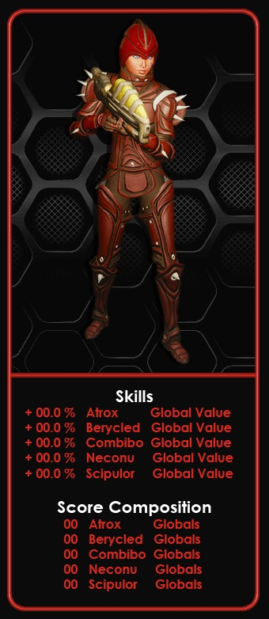
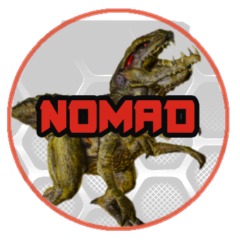
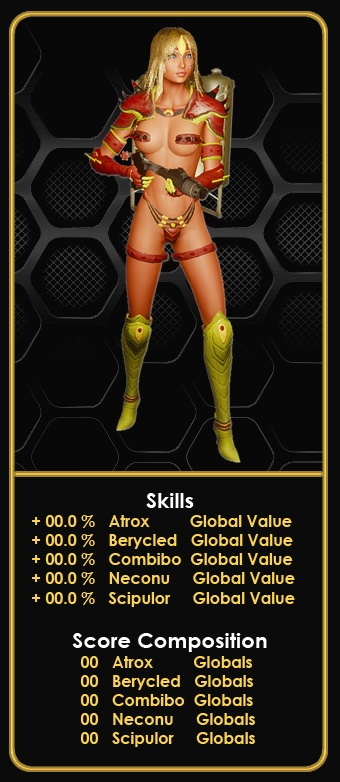
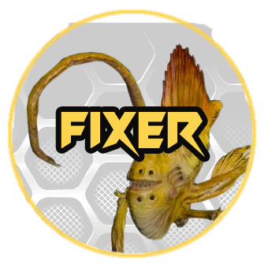
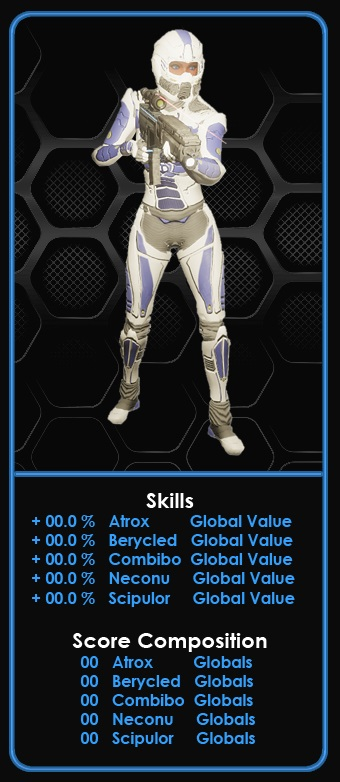
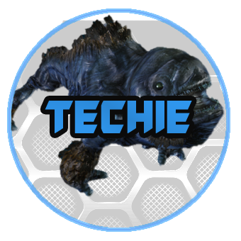
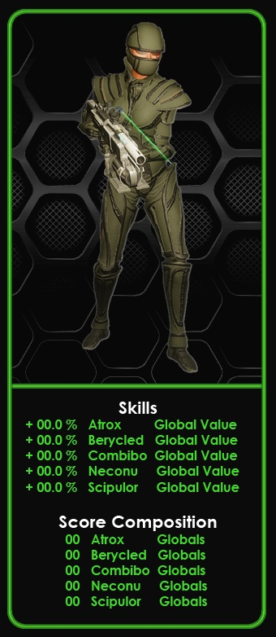
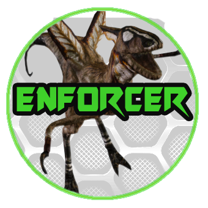

Atrox Nomad


Difficulty: Medium
Shot into space over a millennia ago, the Nomads were part of the Odysseus Project. In search for more habitable planets and resources to grow, expand, and colonize the universe, the Nomads were treated like "Space Monkeys". The unknown, high risk, high pay, and years of solitude spoke to their souls.These people didn't need anyone else keeping them company, they were the social outcasts and vagabonds of their home planet, so they would have willingly left Earth. Society had turned their backs on this group long ago, and they learned quickly to put themselves first, in order to survive. They gladly climbed into those hyperbaric chambers, closing that chapter of their lives, to awake light years away from home... from anyone.
Recommended Hunting Profession: 30+
Scip Fixer


Difficulty: Hard
During the Robot Uprising, settlers got as far away from the radiation at Akbal as they could. Many of them found a new home on Deino Island, where they faced yet another threat, the Scipulor. Those that could successfully fend off the creatures grew stronger and flourished. Scip Blades were removed from the creatures, and later sold for their medicinal and stimulant properties. Medistims, Accustims, Neurostims, and Devastims were crafted by extracting and refining the toxin chemicals found in Scip Blades. The Fixer travel in packs, willing to readily sacrifice their lives for a comrade.They are a pensive people, full of grace and brotherhood, whose class and tact have launched many of them into positions of power and great wealth on Calypso.
Recommended Hunting Profession: 35+
Neconu Techie


Difficulty: Medium
Nearly every Techie worked for Omegaton or Genesis Star at some point in their careers. Disillusioned, mistreated, and severely exploited by their corporations, these people share a common disdain for high up corporate CEOs. Many of their peers who questioned the higher ups soon found themselves without a job, and in some cases thrown into prison or homeless. Nonetheless, the Techie trudged on. They are known as the brightest engineers of today. Many of them played crucial roles in the development of the Teleport systems, FEN weaponry, and the once widely used warp gate technology. Branded "evil geniuses", the Techie are typically the first people consulted when tackling a large-scale problem, project, or the creation of a next level weapon.
Recommended Hunting Profession: 30+
Berycled Enforcer


Difficulty: Easy
Hungry for power, these people were willing to get their hands dirty for the "betterment of humanity". Enforcers are no stranger to suiting up, controlling a riot, and keeping the peace. There's no time to question where or why the orders were given, you just fucking follow them. Secret military bases were constructed deep in the purple mountains East of the Shinook Jungle. Bibo and Berys are native to the area, and their skin is used to create the toughest tactical wear in the universe. Some Calypsians believe the militarization of the Enforcers is going too far, citing instances of citizen abuse, some have even called to "defund" them. Amongst political unrest, corporate greed, and a changing economy, one thing is certain, Enforcers will always have a job.
Recommended Hunting Profession: 25+